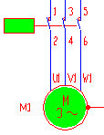
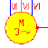
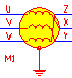
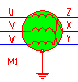
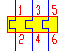

Motor en marcha. Contactor activado.
Cuando el motor está en marcha y funcionando normalmente, el símbolo
aparece relleno de color verde (o amarillo). Lo mismo ocurre con la bobina
del contactor que en ese momento se encuentre activa:

Motor en dos fases.
Si el motor se encuentra en una situación anómala, por ejemplo
en dos fases, se muestra de color amarillo e intermitente.

Nota: En algunos casos el motor se muestra
de color amarillo pero sin intermitencia. En esta situación se indica
que el motor está girando en sentido contrario. Esta situación
se da en todos los circuitos con inversión del sentido de giro.
El motor en el arranque estrella/triángulo
Cuando el motor se encuentra en estrella se muestra de color amarillo:

Cuando se encuetra en triángulo se muestra de color verde:

Relé termico actuando
Cuando el relé térmico detecta una anomalía en el motor,
se activa mostrándose de color amarillo e intermitente.

| <<--Volver
|